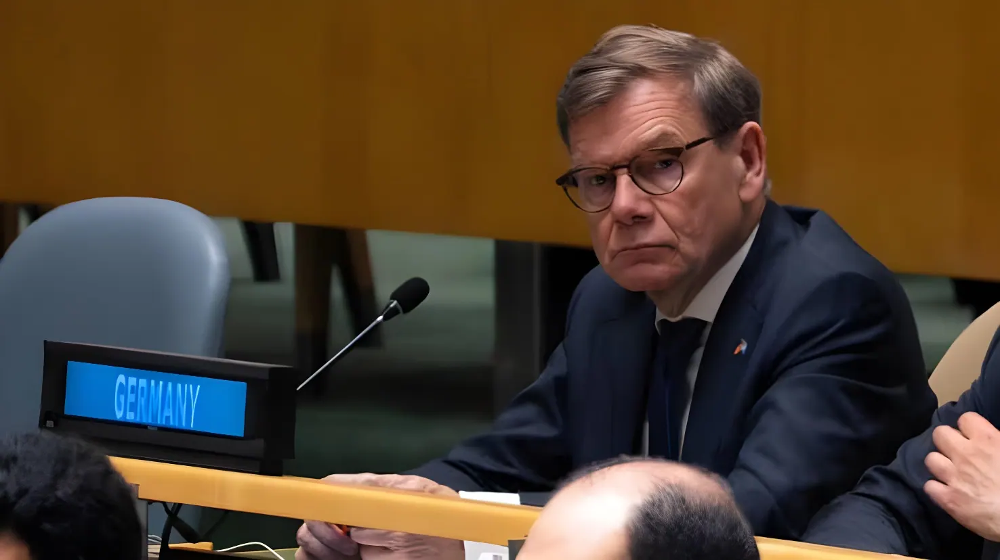

Le 3 juin 2026, pour la première fois de son histoire moderne, l'Allemagne n'a pas obtenu le siège non permanent au Conseil de sécurité des Nations unies qu'elle convoitait. Avec seulement 104 voix sur 193, Berlin a été battue par le Portugal (134 voix) et l'Autriche (131 voix). Ce vote secret révèle une érosion de l'influence allemande sur la scène multilatérale, au croisement de la guerre en Ukraine, du conflit au Proche-Orient et d'une campagne menée trop tard.
Le Conseil de sécurité de l'ONU compte quinze membres : cinq permanents dotés du droit de veto (États-Unis, Royaume-Uni, France, Russie, Chine) et dix membres non permanents élus pour deux ans par l'Assemblée générale. Ces derniers sont renouvelés par moitiés chaque année, selon une répartition géographique. Pour le groupe « Europe occidentale et autres États », deux sièges étaient à pourvoir lors du vote du 3 juin 2026, pour la période 2027-2028.
L'Allemagne, qui a déjà siégé six fois au Conseil de sécurité — en 1977-1978, 1987-1988, 1995-1996, 2003-2004, 2011-2012 et 2019-2020 —, n'avait jamais subi d'échec lors de ces élections. Ce vote revêtait une importance symbolique particulière pour le chancelier Friedrich Merz, qui entend faire du rayonnement international de Berlin un pilier de son mandat.
Le vote étant secret, les causes précises de l'échec restent partiellement inconnues. Trois grands facteurs sont néanmoins avancés par les observateurs et reconnus, en partie, par le gouvernement allemand lui-même.
En premier lieu, la position de Berlin sur le conflit israélo-palestinien a probablement joué un rôle décisif. Depuis l'attaque du Hamas d'octobre 2023, l'Allemagne a soutenu fermement le gouvernement israélien et s'est longtemps refusée à condamner les opérations militaires à Gaza et en Cisjordanie, une posture mal perçue par de nombreux États du « Sud global » — dont les voix sont pourtant indispensables pour atteindre les 127 suffrages nécessaires.
Deuxième facteur : l'influence russe. Le ministre des Affaires étrangères Johann Wadephul a publiquement affirmé que Moscou avait mené une campagne en coulisses contre la candidature allemande, estimant que le Kremlin ne souhaitait pas voir Berlin — soutien déclaré de l'Ukraine — siéger à la table du Conseil.
L'Autriche mène une campagne active depuis plus de dix ans pour ce siège. Berlin entre tardivement dans la course, sans avoir consolidé de coalition de soutien solide au préalable.
Annalena Baerbock, ex-ministre allemande des Affaires étrangères, prend ses fonctions de présidente de l'Assemblée générale de l'ONU pour la session 2025-2026 — une position éminente, mais de nature différente.
Le ministre des Affaires étrangères Johann Wadephul se rend à New York et rencontre les représentants d'au moins 80 États membres pour plaider la candidature allemande. Berlin met en avant ses contributions financières à l'ONU et son engagement multilatéral.
Vote à l'Assemblée générale. Le Portugal obtient 134 voix, l'Autriche 131. L'Allemagne ne récolte que 104 suffrages, loin des 127 requis. Annalena Baerbock, présidente de l'Assemblée, doit elle-même annoncer le résultat dans un silence de plomb. Wadephul qualifie l'issue de « défaite amère ».
Wadephul impute une part de l'échec à l'influence russe, tout en reconnaissant la contribution des prises de position allemandes sur l'Ukraine et le Proche-Orient. L'opposition critique la politique étrangère du gouvernement Merz.
Un troisième facteur — moins diplomatique mais crucial — est unanimement souligné : l'entrée tardive de l'Allemagne dans la compétition. L'Autriche avait lancé sa campagne depuis plus d'une décennie, en mettant systématiquement en avant le rôle des « petits pays » dans le multilatéralisme. Le Portugal avait lui aussi activé ses réseaux bien en amont. Berlin, en revanche, a construit sa candidature dans un délai nettement plus court, sans avoir préalablement sécurisé des engagements fermes auprès de nombreux États.
Cette lacune stratégique est d'autant plus significative que les élections au Conseil de sécurité reposent sur un lobbying de longue haleine : promesses d'aide au développement, soutiens diplomatiques croisés, visibilité dans les forums régionaux. Le seul mérite économique et financier de l'Allemagne — premier contributeur européen au budget de l'ONU — n'a pas suffi à compenser le déficit de préparation.
| Indicateur | Donnée vérifiée |
|---|---|
| Vote | 3 juin 2026, Assemblée générale ONU |
| Voix Allemagne | 104 sur 193 États membres |
| Voix Portugal | 134 voix (élu) |
| Voix Autriche | 131 voix (élu) |
| Seuil requis (2/3) | 127 voix |
| Précédents mandats DE au CS | 6 fois (1977-2020) |
| Ministre AE allemand à New York | Johann Wadephul (CDU) |
Sur le plan intérieur, cet échec fragilise davantage Friedrich Merz, dont le bilan des premières semaines au pouvoir est marqué par plusieurs déconvenues : le fiasco du vote sur la migration au Bundestag, les tensions au sein de la coalition CDU/SPD et désormais cet affront diplomatique. L'opposition — Verts en tête — en profite pour dénoncer une politique étrangère qu'elle juge incohérente et timorée, notamment sur le dossier Proche-Orient et sur les coupes budgétaires dans l'aide au développement.
Sur le plan multilatéral, le vote révèle un problème structurel : le capital de crédibilité de l'Allemagne au sein du « Sud global » s'est érodé. La réduction de l'aide humanitaire, l'abandon de certains engagements climatiques et le positionnement sur Gaza ont creusé un fossé entre la rhétorique du multilatéralisme prôné par Berlin et la perception de nombreux États membres de l'ONU.
« Évidemment, le résultat est une véritable déception, c'est une défaite amère. »
— Johann Wadephul, ministre allemand des Affaires étrangères, 3 juin 2026L'échec du 3 juin 2026 n'est pas seulement la défaite d'une candidature mal préparée : il donne à lire l'état réel de l'influence allemande dans un monde multipolaire. L'Allemagne reste la première économie d'Europe et un contributeur financier majeur de l'ONU, mais ces atouts ne compensent plus automatiquement des positionnements jugés contradictoires avec les attentes d'une majorité d'États membres. Le vote sanctionne une politique étrangère tiraillée entre le soutien à l'Ukraine — salué à l'Ouest — et le traitement du conflit à Gaza — critiqué par le Sud. Pour la diplomatie allemande, l'enjeu des prochaines années sera de reconquérir une crédibilité universelle, condition indispensable à toute ambition multilatérale durable. La réforme structurelle du Conseil de sécurité, que Berlin appelle de ses vœux depuis longtemps, paraît encore plus lointaine désormais.
Am 3. Juni 2026 hat Deutschland zum ersten Mal in seiner modernen Geschichte den angestrebten nichtständigen Sitz im Sicherheitsrat der Vereinten Nationen nicht erhalten. Mit nur 104 Stimmen von 193 wurde Berlin sowohl von Portugal (134 Stimmen) als auch von Österreich (131 Stimmen) geschlagen. Diese geheime Abstimmung offenbart eine Erosion des deutschen Einflusses im multilateralen Rahmen — am Schnittpunkt von Ukraine-Krieg, Nahostkonflikt und einer zu spät begonnenen Wahlkampagne.
Der UNO-Sicherheitsrat besteht aus fünfzehn Mitgliedern: fünf ständige Mitglieder mit Vetorecht (USA, Großbritannien, Frankreich, Russland, China) sowie zehn nichtständige Mitglieder, die von der Generalversammlung für zwei Jahre gewählt werden. Für die Gruppe „Westeuropa und andere Staaten" waren beim Votum vom 3. Juni 2026 zwei Sitze für den Zeitraum 2027–2028 zu besetzen.
Deutschland, das bereits sechsmal im Sicherheitsrat vertreten war (1977–1978, 1987–1988, 1995–1996, 2003–2004, 2011–2012 und 2019–2020), hatte bei diesen Wahlen bislang noch nie eine Niederlage erlitten. Dieser Urnengang war für Bundeskanzler Friedrich Merz von besonderer symbolischer Bedeutung, da er die internationale Strahlkraft Berlins zum Eckpfeiler seines Mandats erklärt hatte.
Da die Abstimmung geheim war, bleiben die genauen Ursachen des Scheiterns teilweise unklar. Drei wesentliche Faktoren werden jedoch von Beobachtern angeführt und von der deutschen Regierung selbst zum Teil eingestanden.
Erstens hat Berlins Haltung im israelisch-palästinensischen Konflikt wahrscheinlich eine entscheidende Rolle gespielt. Seit dem Hamas-Angriff im Oktober 2023 hat Deutschland die israelische Regierung nachdrücklich unterstützt und sich lange geweigert, die Militäroperationen in Gaza und im Westjordanland zu verurteilen. Diese Haltung kam bei vielen Staaten des „Globalen Südens" schlecht an — deren Stimmen jedoch für das Erreichen der erforderlichen 127 Stimmen unerlässlich sind.
Zweiter Faktor: russischer Einfluss. Außenminister Johann Wadephul erklärte öffentlich, Moskau habe im Hintergrund Wahlkampf gegen die deutsche Kandidatur betrieben, da der Kreml keinen erklärten Ukraine-Unterstützer am Tisch des Sicherheitsrates sehen wolle.
Österreich führt seit mehr als zehn Jahren eine aktive Kampagne durch, die systematisch die Rolle der „kleinen Staaten" im Multilateralismus hervorhebt. Deutschland tritt erst spät in den Wettbewerb ein, ohne zuvor eine solide Unterstützungskoalition aufgebaut zu haben.
Annalena Baerbock, ehemalige deutsche Außenministerin, tritt ihr Amt als Präsidentin der UNO-Generalversammlung für die Sitzungsperiode 2025–2026 an — eine herausragende, aber andersartige Funktion.
Außenminister Wadephul reist nach New York und trifft die Vertreter von mindestens 80 Mitgliedstaaten, um für die deutsche Kandidatur zu werben. Berlin betont seine finanziellen Beiträge zur UNO und sein multilaterales Engagement.
Abstimmung in der Generalversammlung. Portugal erhält 134 Stimmen, Österreich 131. Deutschland erzielt nur 104 Stimmen — weit entfernt von den erforderlichen 127. Annalena Baerbock, Präsidentin der Versammlung, muss das Ergebnis selbst in bleierner Stille verkünden. Wadephul bezeichnet das Ergebnis als „bittere Niederlage".
Wadephul macht den russischen Einfluss für einen Teil des Scheiterns verantwortlich, räumt aber auch ein, dass Deutschlands Positionierungen zu Ukraine und Nahost eine Rolle gespielt haben könnten. Die Opposition kritisiert scharf die Außenpolitik der Regierung Merz.
Ein dritter — weniger diplomatischer, aber entscheidender — Faktor wird einhellig betont: Deutschlands verspäteter Einstieg in den Wettbewerb. Österreich hatte seine Kampagne seit mehr als einem Jahrzehnt aufgebaut, indem es systematisch die Bedeutung der kleinen Länder im Multilateralismus hervorhob. Auch Portugal hatte seine Netzwerke weit im Voraus aktiviert. Berlin hingegen baute seine Kandidatur in einem deutlich kürzeren Zeitraum auf, ohne zuvor verbindliche Zusagen zahlreicher Staaten gesichert zu haben.
Diese strategische Lücke ist umso bedeutsamer, als die Wahlen zum Sicherheitsrat langwieriger Lobbyarbeit bedürfen: Entwicklungshilfeversprechen, wechselseitige diplomatische Unterstützung, Sichtbarkeit in regionalen Foren. Die wirtschaftliche und finanzielle Stärke Deutschlands — als größter europäischer Beitragszahler zum UNO-Haushalt — reichte nicht aus, um den Mangel an Vorbereitung auszugleichen.
| Kennzahl | Verifizierter Wert |
|---|---|
| Abstimmung | 3. Juni 2026, UNO-Generalversammlung |
| Stimmen Deutschland | 104 von 193 Mitgliedstaaten |
| Stimmen Portugal | 134 (gewählt) |
| Stimmen Österreich | 131 (gewählt) |
| Erforderliche Mehrheit (2/3) | 127 Stimmen |
| Frühere deutsche Mandate im SR | 6-mal (1977–2020) |
| Außenminister in New York | Johann Wadephul (CDU) |
Im Inland schwächt dieses Scheitern Friedrich Merz weiter, dessen erste Wochen an der Macht von mehreren Misserfolgen geprägt sind: dem Fiasko der Abstimmung über Migration im Bundestag, den Spannungen innerhalb der CDU/SPD-Koalition und nun dieser diplomatischen Niederlage. Die Opposition — allen voran die Grünen — nutzt die Gelegenheit, eine als widersprüchlich und mutlos empfundene Außenpolitik zu geißeln, insbesondere beim Nahostdossier und bei den Kürzungen in der Entwicklungshilfe.
Auf multilateraler Ebene offenbart das Votum ein strukturelles Problem: das Kapital an Glaubwürdigkeit, das Deutschland beim „Globalen Süden" besaß, ist geschrumpft. Die Reduzierung der humanitären Hilfe, der Rückzug aus bestimmten Klimaverpflichtungen und die Haltung zu Gaza haben eine Kluft aufgerissen zwischen der von Berlin propagierten Rhetorik des Multilateralismus und der Wahrnehmung vieler UNO-Mitgliedstaaten.
„Natürlich ist das Ergebnis eine echte Enttäuschung, eine bittere Niederlage."
— Johann Wadephul, Bundesaußenminister, 3. Juni 2026Das Scheitern vom 3. Juni 2026 ist nicht nur die Niederlage einer schlecht vorbereiteten Kandidatur: Es legt den tatsächlichen Stand des deutschen Einflusses in einer multipolaren Welt offen. Deutschland bleibt die größte Volkswirtschaft Europas und ein bedeutender Geldgeber der UNO, doch diese Stärken gleichen nicht mehr automatisch Positionierungen aus, die von einer Mehrheit der Mitgliedstaaten als widersprüchlich empfunden werden. Die Abstimmung sanktioniert eine Außenpolitik, die zwischen der Unterstützung der Ukraine — im Westen begrüßt — und dem Umgang mit dem Gaza-Konflikt — im Süden kritisiert — hin- und hergerissen ist. Für die deutsche Diplomatie wird es in den kommenden Jahren darum gehen, eine universelle Glaubwürdigkeit zurückzugewinnen, die für jeden dauerhaften multilateralen Anspruch unverzichtbar ist. Die von Berlin seit langem geforderte Strukturreform des Sicherheitsrats erscheint nun noch weiter entfernt.